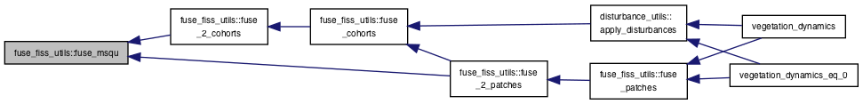
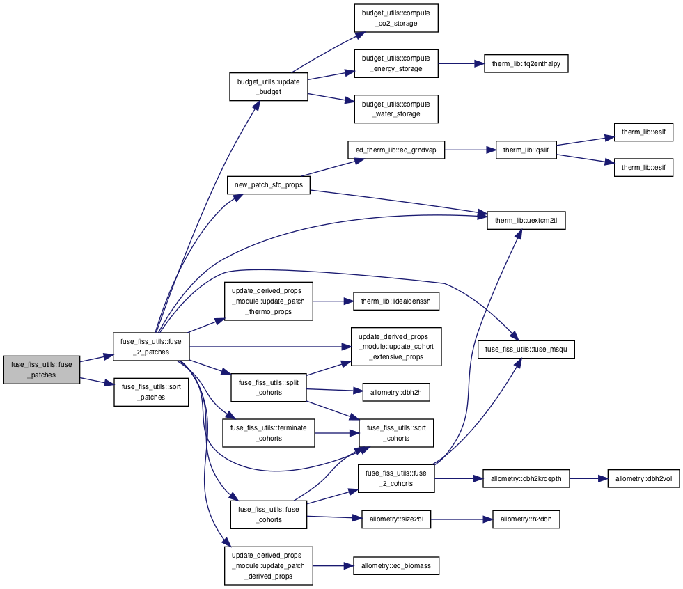
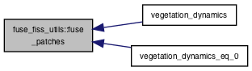
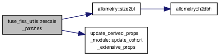
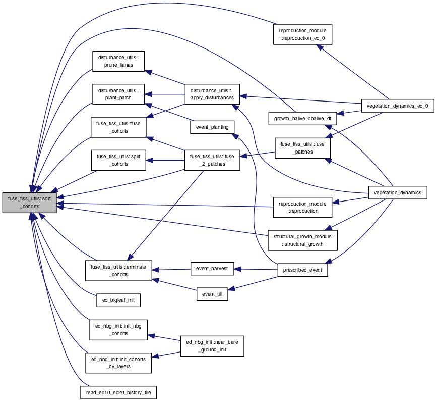
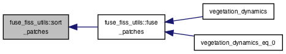
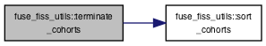
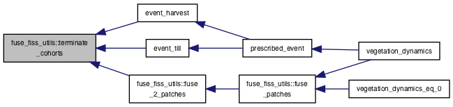
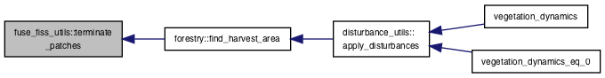

Functions/Subroutines | |
| subroutine | sort_cohorts (cpatch) |
| subroutine | terminate_cohorts (csite, ipa, elim_nplant, elim_lai) |
| subroutine | terminate_patches (csite) |
| subroutine | rescale_patches (csite) |
| subroutine | fuse_cohorts (csite, ipa, lsl, fuse_initial) |
| subroutine | split_cohorts (cpatch, green_leaf_factor) |
| subroutine | fuse_2_cohorts (cpatch, donc, recc, can_prss, can_shv, lsl, fuse_initial) |
| subroutine | sort_patches (csite) |
| subroutine | fuse_patches (cgrid, ifm, fuse_initial) |
| subroutine | fuse_2_patches (csite, donp, recp, mzg, mzs, lsl, ntext_soil, green_leaf_factor, fuse_initial, elim_nplant, elim_lai) |
| real(kind=4) function | fuse_msqu (xmean, xmsqu, xwght, ymean, ymsqu, ywght, r_xy, extensive) |
Function/Subroutine Documentation
◆ fuse_2_cohorts()
| subroutine fuse_fiss_utils::fuse_2_cohorts | ( | type(patchtype), target | cpatch, |
| integer | donc, | ||
| integer | recc, | ||
| real, intent(in) | can_prss, | ||
| real, intent(in) | can_shv, | ||
| integer, intent(in) | lsl, | ||
| logical, intent(in) | fuse_initial | ||
| ) |
Here is the call graph for this function:

Here is the caller graph for this function:

◆ fuse_2_patches()
| subroutine fuse_fiss_utils::fuse_2_patches | ( | type(sitetype), target | csite, |
| integer, intent(in) | donp, | ||
| integer, intent(in) | recp, | ||
| integer, intent(in) | mzg, | ||
| integer, intent(in) | mzs, | ||
| integer, intent(in) | lsl, | ||
| integer, dimension(mzg), intent(in) | ntext_soil, | ||
| real, dimension(n_pft), intent(in) | green_leaf_factor, | ||
| logical, intent(in) | fuse_initial, | ||
| real, intent(out) | elim_nplant, | ||
| real, intent(out) | elim_lai | ||
| ) |
Here is the call graph for this function:

Here is the caller graph for this function:

◆ fuse_cohorts()
| subroutine fuse_fiss_utils::fuse_cohorts | ( | type(sitetype), target | csite, |
| integer, intent(in) | ipa, | ||
| integer, intent(in) | lsl, | ||
| logical, intent(in) | fuse_initial | ||
| ) |
Here is the call graph for this function:

Here is the caller graph for this function:

◆ fuse_msqu()
| real(kind=4) function fuse_fiss_utils::fuse_msqu | ( | real(kind=4), intent(in) | xmean, |
| real(kind=4), intent(in) | xmsqu, | ||
| real(kind=4), intent(in) | xwght, | ||
| real(kind=4), intent(in) | ymean, | ||
| real(kind=4), intent(in) | ymsqu, | ||
| real(kind=4), intent(in) | ywght, | ||
| real(kind=4), intent(in) | r_xy, | ||
| logical, intent(in) | extensive | ||
| ) |
Here is the caller graph for this function:

◆ fuse_patches()
| subroutine fuse_fiss_utils::fuse_patches | ( | type(edtype), target | cgrid, |
| integer, intent(in) | ifm, | ||
| logical, intent(in) | fuse_initial | ||
| ) |
Here is the call graph for this function:

Here is the caller graph for this function:

◆ rescale_patches()
| subroutine fuse_fiss_utils::rescale_patches | ( | type(sitetype), target | csite | ) |
Here is the call graph for this function:

◆ sort_cohorts()
| subroutine fuse_fiss_utils::sort_cohorts | ( | type(patchtype), target | cpatch | ) |
Here is the caller graph for this function:

◆ sort_patches()
| subroutine fuse_fiss_utils::sort_patches | ( | type(sitetype), target | csite | ) |
Here is the caller graph for this function:

◆ split_cohorts()
| subroutine fuse_fiss_utils::split_cohorts | ( | type(patchtype), target | cpatch, |
| real, dimension(n_pft), intent(in) | green_leaf_factor | ||
| ) |
Here is the call graph for this function:

Here is the caller graph for this function:

◆ terminate_cohorts()
| subroutine fuse_fiss_utils::terminate_cohorts | ( | type(sitetype), target | csite, |
| integer, intent(in) | ipa, | ||
| real, intent(out) | elim_nplant, | ||
| real, intent(out) | elim_lai | ||
| ) |
Here is the call graph for this function:

Here is the caller graph for this function:

◆ terminate_patches()
| subroutine fuse_fiss_utils::terminate_patches | ( | type(sitetype), target | csite | ) |
Here is the caller graph for this function:
